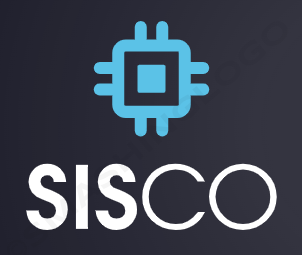

S.A.S.C.O o abreviación de Sistema de Atención y Solicitud de Citas para Orientación es un sistema que se creo con el fin de informar a los estudiantes y padres de familia sobre los procesos que se realizan en el departamento de orientación en los centros educativos, además de esto el sistema permite solicitar citas con las orientadoras para la discusión de distintos asuntos a conveniencia de los usuarios y solicitantes
